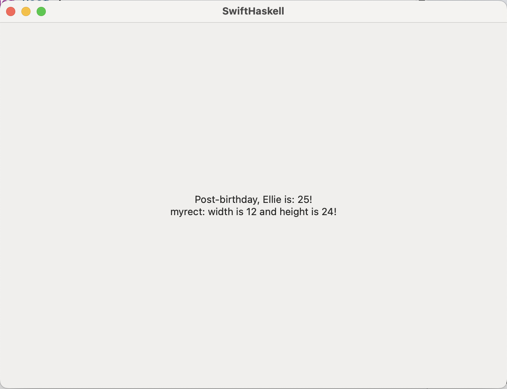

This is the third installment of the in-depth series of blog-posts on developing native macOS and iOS applications using both Haskell and Swift/SwiftUI. This post is a detour into the low-level world of Haskell and serves to explore an alternative approach. It is mostly a (very unsafe) curiosity, for those interested in these matters.
You may find the other blog posts in this series interesting:
The series of blog posts is further accompanied by a github repository where each commit matches a step of this tutorial. If in doubt regarding any step, check the matching commit to make it clearer. Additionally, I’m writing a build tool and libraries to facilitate the interoperability between Haskell and Swift at haskell-swift.
This write-up has been cross-posted to Well-Typed’s Blog.
1 Coercing Haskell memory objects to Swift
Welcome to the darkest corner in this series of posts: the part where we unsafely coerce an object in the Haskell heap in(to) Swift. This section will serve to walk the reader through some of the lower level details of Haskell, and explore what it could mean to not marshal data between the language boundary.
Even though we will avoid serialization and unsafely coerce memory representations, we will still go through the C foreign function interface. In theory, it may be possible (but incredibly hard) to figure out the ABI/how to call Haskell symbols and somehow load and call them in the Swift program accordingly, but I didn’t go that far.
Changing up the data types a bit, in particular to avoid Strings because their memory representations both in Haskell and Swift are complex to figure out, we have a Haskell program:
data Rect
= Rect { width :: Int
, height :: Int
}
myrect = Rect{width=12, height=24}
double :: Rect -> Rect
double Rect{width=x, height=y} = Rect{width=x*2, height=y*2}In Swift, we’ll want to inspect the myrect value without serialising it
across the foreign interface. We want to look directly at Haskell’s memory for
myrect, as though it were a Swift object.
1.1 Memory representation of datatype in Haskell
In Haskell, most values are heap-allocated. In the following
program, myrect is a pointer to a heap object of type Rect:
myrect = Rect{width=12, height=24}
area = putStrLn ("Area: " ++ show (width myrect * height myrect))We can actually inspect the memory representation of myrect by looking at the C--
code resulting from compiling this program standalone (C-- is an intermediate
representation used by the Glasgow Haskell Compiler, which sits somewhere
between C and Assembly, and will eventually be transformed into Assembly by the
native code generator in subsequent steps). Conjure up the invocation:
ghc -fforce-recomp -ddump-cmm Memory.hs > Memory.cmmOpening Memory.cmm we can find the closure of the symbol myrect, with
closure in this context meaning the object in static or heap memory, static in
this case:
section ""data" . Memory.myrect_closure" {
Memory.myrect_closure:
const Memory.Rect_con_info;
const stg_INTLIKE_closure+449;
const stg_INTLIKE_closure+641;
const 3;
}Essentially, the myrect_closure label points to 4 contiguous words:
* a con_info which is metadata about the constructor used,
* 2 words have an stg_INTLIKE_closure, which are the (boxed) integers 12 and 24 that we used in the source definition
* and the last word is the static link field (grep for Note [STATIC_LINK fields] in
the GHC codebase for details) – it can often be optimised away.
Int datatype
is also heap allocated (as almost everything else in Haskell). Instead, they are
static pointers to known integer values (two occurrences of the same integer
will use share the same location and pointer).
Here’s a short GHC note about integer closures
Note [CHARLIKE and INTLIKE closures]
~~~~~~~~~~~~~~~~~~~~~~~~~~~~~~~~~~~~
These are static representations of Chars and small Ints, so that
we can remove dynamic Chars and Ints during garbage collection and
replace them with references to the static objects.1.2 Memory representation of struct in Swift
In Swift’s side we can try a similar thing, let’s compile a standalone Swift
program with the Rect struct defininition and with a top-level binding:
func makeRect(w: Int, h: Int) -> Rect {
return Rect(width: 533, height:6464)
}and chant the invocation with the flag to print the LLVM IR generated code:
swiftc Rect.swift -emit-ir -o - | swift demangle > Rect.SGrepping Rect.S for Rect you should find:
%T4main4RectV = type <{ %TSi, %TSi }>
%TSi = type <{ i64 }>Rect to be a packed
structure of two 64bit integers.
Here’s an excerpt from the LLVM documentation on packed structures
; Syntax
%T1 = type { <type list> } ; Identified normal struct type
%T2 = type <{ <type list> }> ; Identified packed struct type
; Examples:
{ i32, i32, i32 } ; A triple of three i32 values
{ float, ptr } ; A pair, where the first element is a float and the second element is a pointer.
<{ i8, i32 }> ; A packed struct known to be 5 bytes in size.In short, the Rect type is a type <{ i64, i64 }> which means 8*2 bytes in memory.
To double check, we can look for the makeRect function that should return
exactly a 16 byte structure.
1.3 Interpreting Haskell memory in Swift
Summarising, a Rect value in Swift will look like (A) in memory, and a Haskell
Rect value will look like (B) in memory:
┌────┬────┐
(A) │ 533│6464│
└────┴────┘
┌────┐
(B) │ │
└─┬──┘
│ ┌────┬────┬────┬────┐
└──►│Rect│ │ │ 3 │
└────┴┬───┴─┬──┴────┘
│ │
┌─────┘ └─┐
│ │
┌▼───┬────┐ ┌▼───┬────┐
│ I# │ 12 │ │ I# │ 12 │
└────┴────┘ └────┴────┘The first thing we can do to bring one representation closer to the other is
store the integers unboxed in the fields of the Haskell datatype, instead of
using static closures to boxed integers. This can be done by making the field strict
with the ! annotation, and using an {-# UNPACK #-} pragma to guarantee it the
unboxing when compiling with optimisations (although it is likely that compiling
with optimisations will unbox the strict integer anyway without the pragma1). That is, update Rect to the following, recompile,
and check the C-- representation again – using optimisations this time
(adding -O to the invocation).
data Rect
= Rect { width :: {-# UNPACK #-} !Int
, height :: {-# UNPACK #-} !Int
}You’ll see that compiling with optimisations will get rid of the static link field and store literal integers in the fields of the datatype:
Memory.myrect_closure:
const Memory.Rect_con_info;
const 12;
const 24;The Haskell memory now looking like
┌────┐
myrect │ │
└─┬──┘
│ ┌────┬────┬────┐
└──►│Rect│ 12 │ 24 │
└────┴────┴────┘ 1.3.1 Unsafe Coercing
With this simpler memory representation for Rect, the task of unsafely
coercing it to a Swift struct becomes more straightforward.
Ultimately, we’ll want to return from exported Haskell function a pointer which
Swift can de-reference to get a struct Rect.
The steps are:
- Unsafely coerce
myrect :: Rectinto amyrect_ptr :: Ptr (), a pointer to the beginning of theRect-typed heap2 object. - Add the size of a word to the
myrect_ptrpointer, to get a pointer pointing directly to the beginning of the integer data rather than one which points to the info table.
This won’t work trivially, however.
The next difficulty is caused by a code-generation “optimisation” called pointer-tagging. Briefly, pointer tagging will insert additional information into the 3 lower bits of an address (on a 64bit machine) since these are guaranteed to be unused due to alignment constraints. This optimisation makes Haskell programs access a lot less memory since certain checks, like a pattern match on a constructor, can be done just by looking at some bits in the address, removing the need to load from that address.
Specifically, a tag of 0 means the object is either unevaluated or we don’t
know which constructor constructed it. A number tag (1 through 7) means the
constructor of that value is known and the number matches the constructor index.
In the following example, the myrect value will be tagged with 1, since
the compiler can statically see myrect is constructed with Rect (the 1st
(and only) constructor, hence the tag 1). We can see this by looking again at
C-- for this simple function:
giveMyRect :: () -> Rect
giveMyRect () = myrectThe corresponding C-- code looks like:
Memory.giveMyRect_entry() {
// ...
R1 = Memory.myrect_closure+1;
Sp = Sp + 8;
call (P64[Sp])(R1)
}Note how we return myrect_closure+1, the pointer to the
myrect_closure plus the tag, rather than just in register R1.
Slightly mover verbose explanation of pointer tagging
GHC will use an optimisation technique called pointer tagging to add a tag to every heap pointer denoting which of the datatype constructors was used to construct that value, or whether the value has not yet been evaluated:
- If the tag is
0then the pointed-to value is either unevaluated or we don’t know its constructor - If the tag is
1then we know the pointed-to value to have been constructed with the first constructor of the datatype - If the tag is
2then we know the pointed-to value to have been constructed with the second constructor of the datatype, and on and on up until7, which is the last possible tag3.
Effectively, we need a step between steps 1 and 2:
1.5. Subtract the tag (i.e 1) from the unsafe-coerced myrect :: Ptr ().
Let us write the Haskell function that we will export in the Haskell foreign
library MyForeignLib.hs (after copying over the last Rect definition). This
function returns a Ptr (), and that pointer points to a Rect in memory that
can be directly understood by Swift as a Rect struct.
give_rect :: Ptr ()
give_rect =
let
-- Step 1
tagged_ptr = rectToAddr myrect :: Ptr ()
-- Step 1.5
untagged_ptr = wordPtrToPtr (complement 7 .&. ptrToWordPtr tagged_ptr)
-- Step 2
ptr_final = untagged_ptr `plusPtr` 8 :: Ptr () -- 8 bytes
in
ptr_final
foreign export ccall give_rect :: Ptr ()The first step, rectToAddr is the hardest. One can’t trivially cast Rect to Ptr () using
unsafeCoerce, since we really want the Addr# that points to the Rect
memory object. unsafeCoerce# from Rect to Addr# is closer, but in my
attempts it seemed to trigger some infinite loop, or worse. The more correct way
to do this incredibly unsafe operation is anyToAddr#, which converts any
Haskell value a into the underlying Addr# which points to it. The
implementation for this depends on GHC.Exts, GHC.IO, and {-# LANGUAGE MagicHash, UnboxedTuples #-}. Explaining it further is out of scope:
rectToAddr :: Rect -> Ptr ()
rectToAddr x = unsafePerformIO $ IO $ \rw ->
case anyToAddr# x rw of
(# rw, addr #) -> (# rw, Ptr addr #)The second step binary ands (the C bit-operator &) the complement of 7 = 0b111 and the pointer to mask out the tag. The third step adds 8 bytes to the
pointer to get the pointer to point at the data rather than the info header.
Note: we’re essentially ignoring garbage collection in this all. If rectToAddr
were applied to a heap-allocated Haskell object, rather than a static one, said
heap object would likely be collected before Swift could get any look at it.
Just to add to the brittleness of this strategy :). Using some strategy like
StablePtrs we could keep the heap objects live, but we’d also be forfeiting
any useful de-allocation strategy.
1.3.2 De-referencing it from Swift
On the Swift side we need simply to de-reference a Rect from the pointer to
the Haskell memory given by give_rect. In ContentView we add:
struct Rect {
let width: Int
let height: Int
}
func wrap_give_rect() -> Rect {
let y = give_rect()
return y!.load(as: Rect.self)
}We call give_rect to get the Ptr () to the Haskell object in the Haskell
memory. Then, simply load a Swift Rect from it.
Let’s add it to the body and display both the width and height of our rectangle:
var body: some View {
VStack {
let user = birthday(user: User(name: "Ellie", age: 24))
+ let rect = wrap_give_rect()
Text("Post-birthday, \(user.name) is: \(user.age)!")
+ Text("myrect: width is \(rect.width) and height is \(rect.height)!")
}
.padding()
}Great success!

1.4 Conclusion
As you may have come to understand, this approach in practice, despite fun, is pretty much the horrifying opposite of robust – given how much we are relying on the undefined memory layout of Swift, GHC optimisations, unsafe coerce, and just so much undefined behaviour in general.
We only skimmed the surface of it despite having simplified it massively. For example, if we weren’t using a top-level binding, we’d have to worry about the garbage collector getting to the heap object before Swift could.
The veredict is that this is not a reasonable option to be considered for the large robust applications mixing Haskell and Swift that are our goal.
As an exercise, check this by looking at the
C--representation of the program compiled with optimisations, with the integer fields being strict, but without using theUNPACKpragma↩︎Really, the
myrectvalue is not in the heap as it is static data put by the compiler in the data section, but for our purposes that difference does not matter↩︎Why
7? In a 64bit system, memory is aligned to 64 bits, meaning that pointers to heap allocated memory will always have 3 bits that are necessarily0valued – so we can use these 3 bits for tags – that is, we can use tags from 0 to 7.↩︎